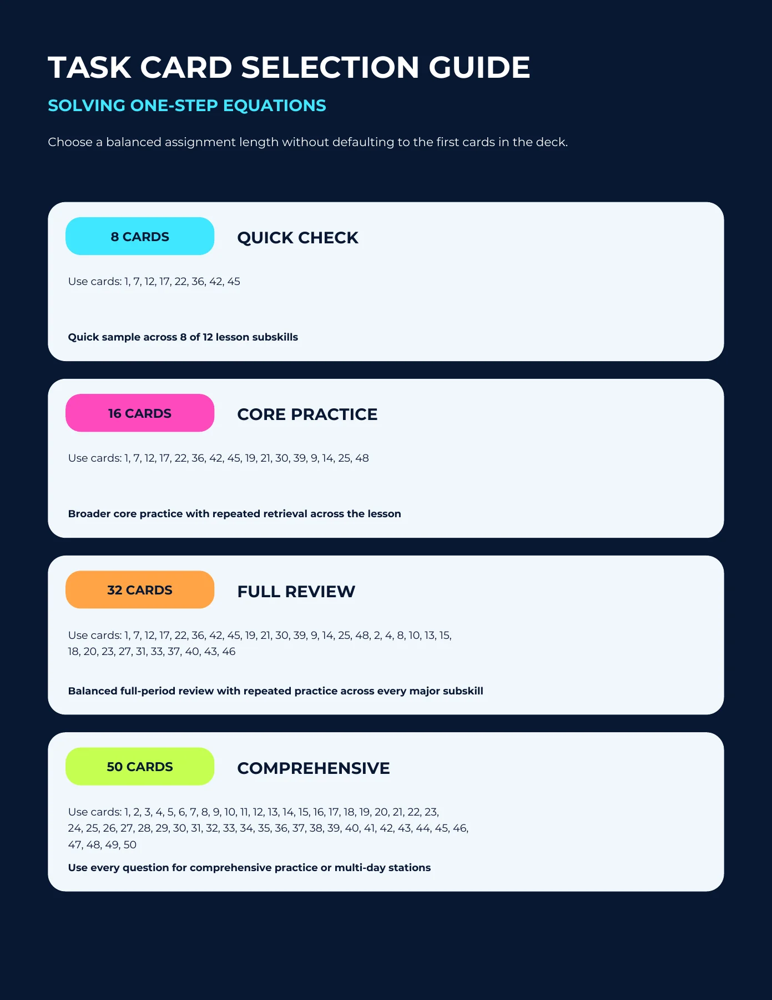
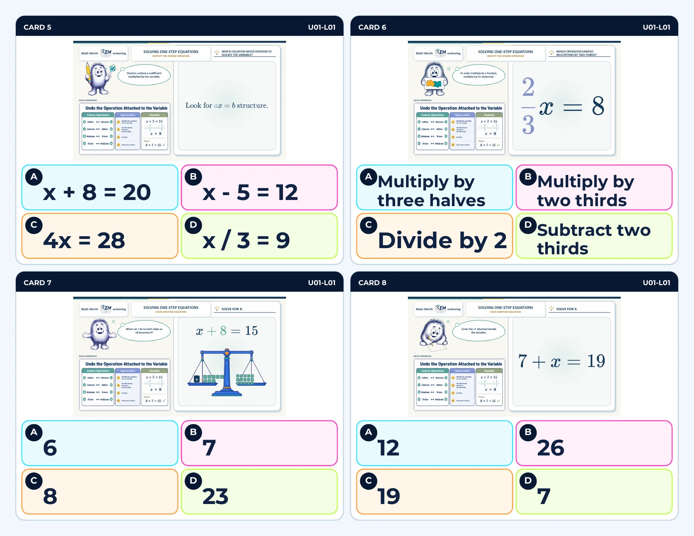
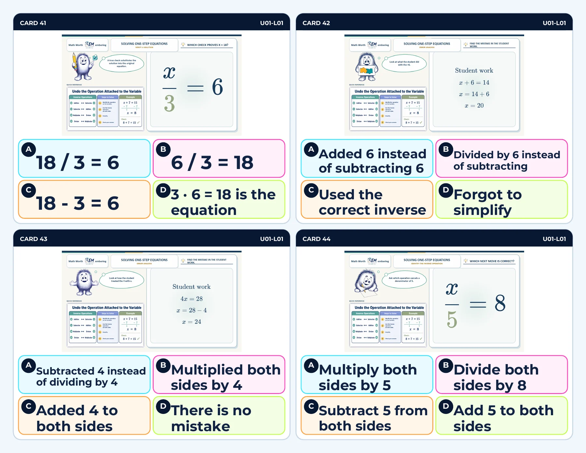

{kind=link}
{kind=link}
{kind=link}
Make the coverage tradeoff visible
The 8-card quick check samples eight of twelve listed subskills. Longer selections expand coverage. Teachers can see what a shorter assignment includes before handing it out.
Task bank · Assignment design
A 50-card bank becomes more useful when teachers can choose a purposeful set in a few moments.
One-Step Equation Task Cards Solving one-step equations
See the actual materials ↓The learner experience
A quick check and a full review need different assignments. This resource pairs a varied one-step-equation bank with named 8-, 16-, 32-, and 50-card selections, two print densities, and recording sheets.
Use the selection guide to match the assignment to its purpose.
Identify an inverse operation, solve an equation, or inspect an error.
Use recorded work and teacher support to decide what needs another pass.
Inside the resource
Selected pages from the actual resource files. Open any page to inspect the details.

Selection guide, page 1. Four named sets make assignment length and purpose visible.

4-up deck, page 5. Inverse-operation and equation-solving tasks share a consistent response format.

4-up deck, page 14. Verification and error-analysis items extend practice beyond calculation.
Why I designed it this way
The 8-card quick check samples eight of twelve listed subskills. Longer selections expand coverage. Teachers can see what a shorter assignment includes before handing it out.
The 4-up and 8-up layouts let instructors use the same tasks at different print densities. Recording sheets support collecting evidence beyond a selected answer.
Evidence & next evaluation
These authored materials show the activity structure and design decisions. Learner outcomes have not yet been measured for this case study.
Ask an instructor to select cards for a particular misconception and explain the choice. The package references Blooket and Gimkit; current external game access is not established by these print samples.